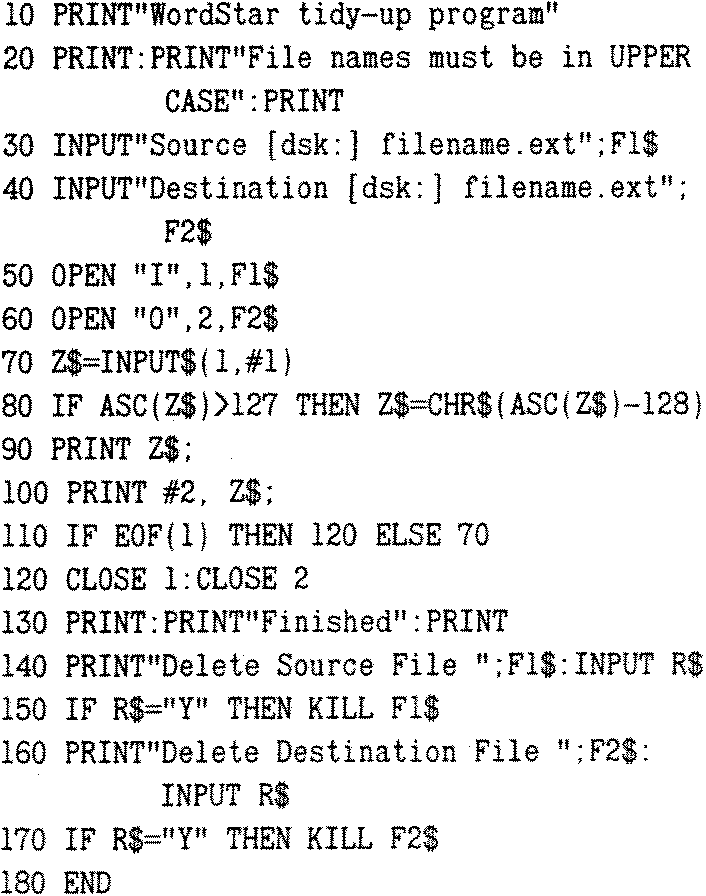

80-Bus News |
Spring 1985 · Volume 4 · Issue 1 |
| Page 30 of 31 |
|---|
As far as I am concerned, a much more satisfactory approach is to use a small BASIC program which examines the text file character by character and decides whether or not to print and save the character in a separate, new file, displaying its progress on the screen. It is slower than using PIP but the new text scrolls up at a reasonable rate, so this is not a major drawback.
The program asks for the names of the source and destination files and then reads the data from the source file, character by character. The file names must be in upper case letters and if either of them does not reside on the logged—in disk, the disk name must be quoted – e.g. B:WORKING.DOC. If a character is found whose ASCII value is greater than 127, it is converted back to a value less than 127. The program grinds on until it reaches an End-of-File marker, prints out a message and then asks if either the source or destination files are to be deleted.
A trial run will show that certain print control characters are not converted properly — such as ^B, ^D, ^Q, or ^E. This is because their ASCII equivalents are less than 127 (control characters have ASCII codes between 0 and 31). This means that there will be normal video graphics symbols corresponding to these codes in the destination file and on the screen. The overall effect isn’t too serious, however, except where a lot of fancy printing is involved in the source file.
The interpreted BASIC program implies that MBASIC.COM must be on one of the drives in the system, and the conversion process will be rather slower than would be the case if a compiled BASIC program was used. With a largish file, the difference in execution time of the .COM version can be less than half that of the .BAS, and one has the added advantage that MBASIC is no longer required. To give some idea of the time taken, this article took 54 seconds to ‘tidy’ using interpreted BASIC and 26 seconds using the compiled version. To produce the compiled version, one needs access to BASCOM.COM, L80.COM and OBSLIB.REL; the resultant .COM file does not need BRUN.COM — which would be the case if BASLIB.REL were used instead of OBSLIB.
| Page 30 of 31 |
|---|